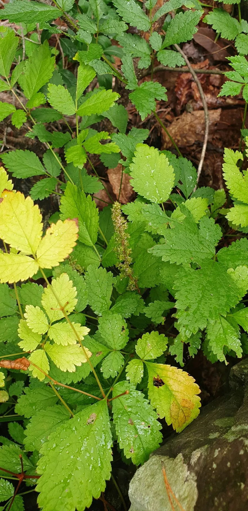

花卉与草本 · 植物界
落新妇 Astilbe chinensis

虎耳草科多年生草本，夏季开粉红色羽状花序，花序蓬松、花色柔和，耐阴湿，是林下与花境常见的观赏植物。
- 分类
- 门被子植物门纲木兰纲目虎耳草目科虎耳草科属落新妇属
- 栖息环境
- 林下、溪边与山谷阴湿处，喜半阴湿润
- 地理分布
- 中国长江流域及以北各地；朝鲜半岛、俄罗斯有分布
- 保护级别
- 暂无评估；中国未列入国家重点保护野生植物名录
物种志
落新妇为虎耳草科落新妇属多年生草本，株高 50–100 厘米，地下具粗壮的根状茎。叶基生，二至三回三出复叶，小叶卵形至披针形，边缘具锯齿。圆锥花序顶生，花序轴被腺毛，花小，粉红色至紫红色，花期 6–8 月；果实为蓇葖果，果期 8–9 月。
落新妇原产中国长江流域及以北各地，生于林下、溪边与山谷阴湿处，朝鲜半岛、俄罗斯也有分布。它喜半阴湿润的环境，耐寒性较强，适宜疏松肥沃、排水良好的土壤。花序蓬松、花色柔和，耐阴湿，是林下与花境常见的观赏植物；根状茎可入药，有清热解毒、散瘀止痛之效。栽培以分株繁殖为主，夏季需遮阴并保持土壤湿润，花后剪去残花可促进二次开花。
形态与习性
- 株高50–100 厘米，根状茎粗壮
- 花期6–8 月，粉红色圆锥花序
- 果期8–9 月，蓇葖果
- 光照喜半阴，忌强光暴晒
- 水分喜湿润，忌积水
- 土壤疏松肥沃、排水良好的土壤
- 主要用途林下与花境观赏，根状茎入药
趣味知识
- 落新妇的花序蓬松如羽毛，是花境中少见的雾状花材。
- 它耐阴湿，适合种在树下、溪边和建筑北侧。
- 落新妇的花可作切花，干花也常用于花艺设计。
- 根状茎入药称“红升麻”，有清热解毒、散瘀止痛之效。